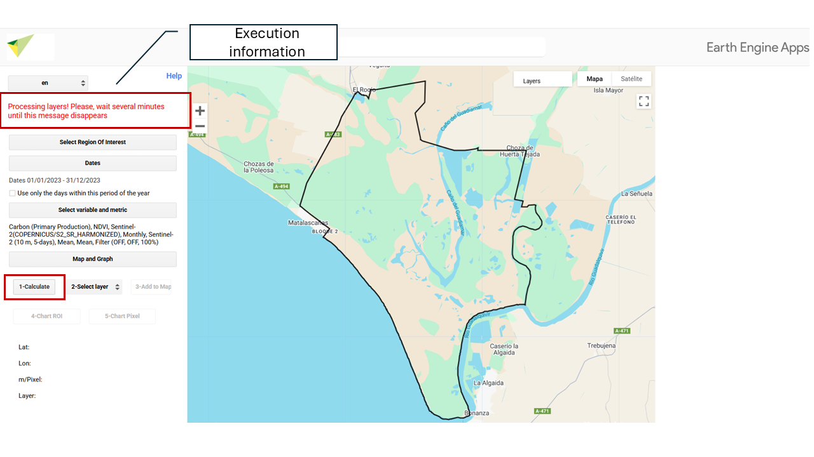
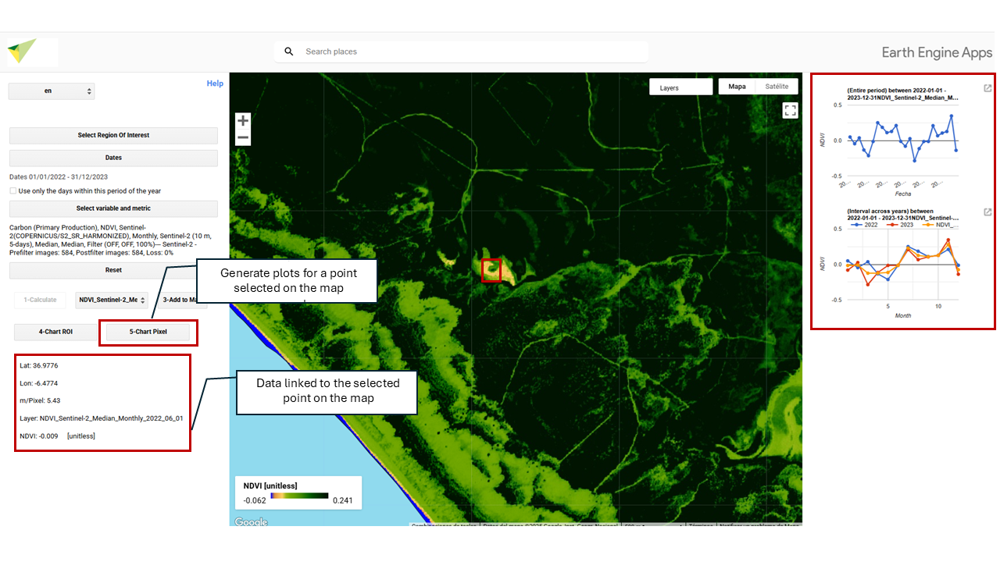

12 Generate Maps and Result Charts
12.1 Calculate
By clicking the button, the result will be generated according to your previous selection.

12.2 Select Layer
This section will display all the layers/maps generated during the calculation. To visualize a specific layer, select it in “2- Select layer” and click “3 - Add to map”.


12.4 ROI Chart
Generates and displays the charts associated with the resulting maps of your Region of Interest (ROI). It produces an average calculation.

12.5 Pixel Chart
Generates and displays the charts associated with a pixel selected with your cursor. When you click on a point in your study area, this option will show the corresponding data including its Latitude, Longitude, m/pixel (showing the map resolution at that zoom level, in meters per pixel), and the name of the layer you are visualizing.
